Objective-C语言的逆向(Mac OS)
逆向分析Objective-C程序时，就需要用到IDA Pro和Hopper Disassembler等工具来帮助我们分析了。IDA Pro功能强大，插件丰富，可以为逆向分析提供许多便利；Hopper Disassembler对于反汇编Objective-C有其优势，动态调试十分方便。通常可以两个工具同时使用。下面以Mac版本的QQ音乐为例，初探一下Objective-C的逆向分析流程。
静态分析
使用IDA Pro分析
首先打开IDA64.app（Mac版的QQ音乐是64位版本，所以这里使用的是IDA64），点击菜单File –> Open，找到QQ音乐所在目录选中：
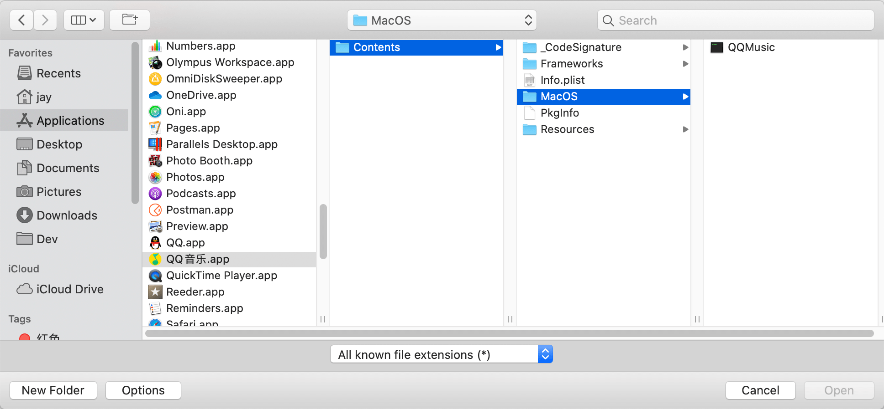
可以看到，QQ音乐.app其实只是一个特殊的文件夹，依次选择Contents –> MacOs –> QQMusic(可执行二进制文件)，并点击Open打开QQMusic。打开后IDA会解析二进制文件，解析过程比较长，需耐心等待（解析完成后可以Ctrl+S保存解析结果，保存为后缀.ida的文件，下次可以直接用IDA打开）。
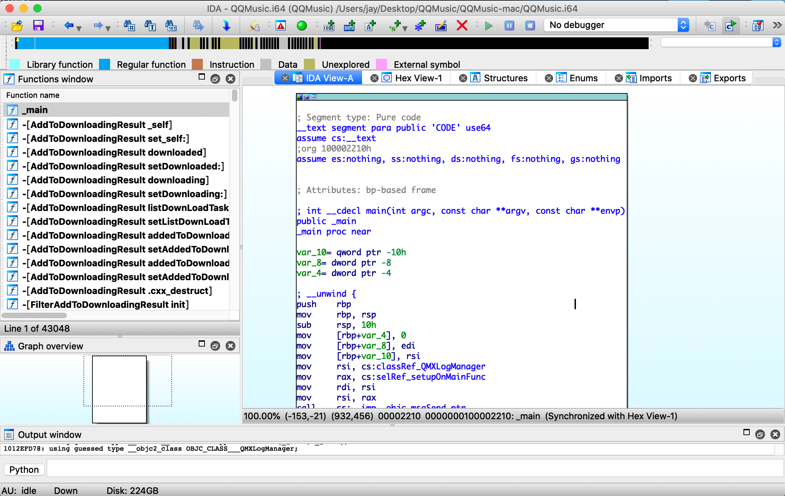
IDA左边Function Window列出了解析出来的的所有函数列表，需要注意的是，OC反编译出来后，并没有以类来划分函数，因为所有的类都被打包在同一个文件里，但是IDA反编译的函数是以-[类名 函数名]这样的规律来命名。
这里，我们可以看出，计算机并不知道什么是类、什么是面向对象，暂且可以这样说，对于计算机只有一段段的可执行代码 – 即函数。（这里只说暂且，等后续深入研究汇编代码时就会发现，计算机其实也不认识函数O_o）
然后我选择_main函数，并双击打开，就是左边的汇编代码内容了，可能小白（包括我）第一次看到这个代码会有点懵。不要怕，问题不大～，我们输入F5，强大的IDA就会为我们生产C的伪代码：
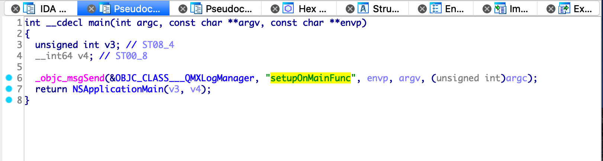
这样是不是就有种似曾相识的感觉了？◉‿◉
熟悉OC的朋友看到NSApplicationMain这个函数应该很清楚，这里其实就是OC框架下的程序入口。但是传入的参数可能会让人疑惑，我们可以和汇编代码比较起来看，然后就会明白，这只是IDA翻译成伪代码时的优化问题，v3、v4其实就是参数argc、argv。所以伪代码在逆向分析中仅供参考，用于快速的分析代码流程逻辑非常有帮助，但是到实际的调试阶段，还是需要以汇编代码为准。
滑动函数列表，我们可以看到QQ音乐代码中所有的函数，通过函数名称可以看出程序中类的划分、命名等。通过这些信息可以大致猜到这些类大概是干嘛用的。比如QQMusicMainPlayerController 这个类应该是QQ音乐主播放器View（MVC结构）对应的Controller，类里的函数包括了一系列的UI事件处理，如收藏歌曲、下载事件处理、显示歌手详情等（都是根据函数名盲猜的）。
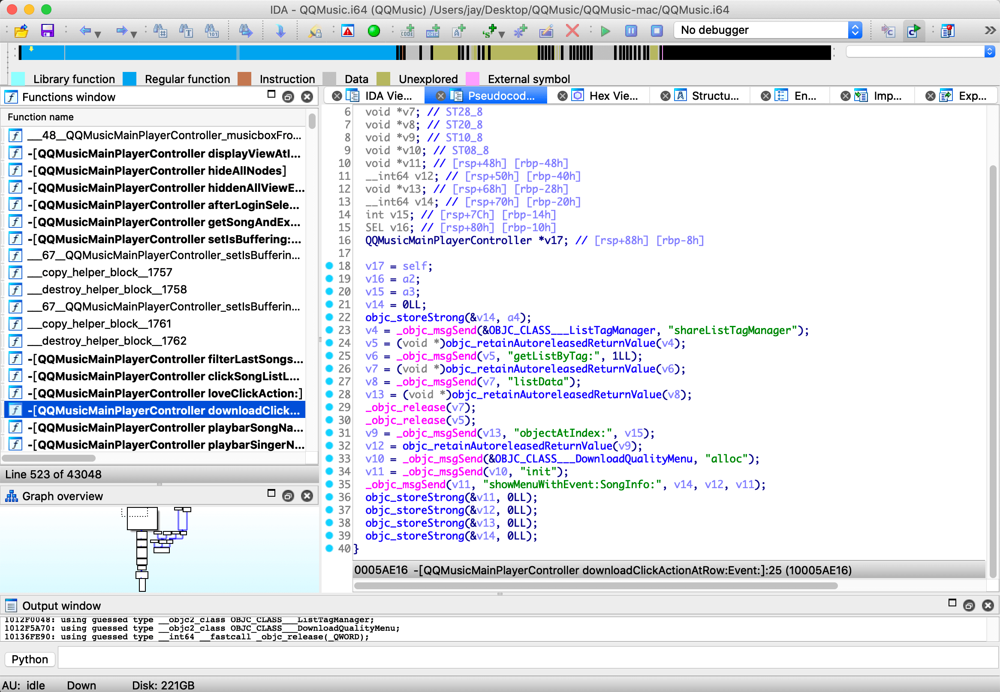
图中展示了QQMusicMainPlayerController downloadClickActionAtRow这个函数的代码内容，代码中可以看到很多_objc_msgSend、objc_retainAutoreleasedReturnValue、objc_storeStrong等函数调用，这其实是OC的消息机制导致的。在OC中，所有的函数调用都被转换成给这个对象发消息(即 _objc_msgSend)，而 objc_storeStrong、objc_retainAutoreleasedReturnValue则是OC内存回收机制相关的函数调用，这些函数都是编译器在编译代码时自动生成的代码，感兴趣可以自行深入了解一下OC的消息机制和几种内存回收原理。
简单分析(盲猜)一下代码的大致流程：
void __cdecl -[QQMusicMainPlayerController downloadClickActionAtRow:Event:]
(QQMusicMainPlayerController *self, SEL a2, int a3, id a4)
{
void *v4; // ST40_8
void *v5; // ST38_8
void *v6; // ST30_8
void *v7; // ST28_8
void *v8; // ST20_8
void *v9; // ST10_8
void *v10; // ST08_8
void *v11; // [rsp+48h] [rbp-48h]
__int64 v12; // [rsp+50h] [rbp-40h]
void *v13; // [rsp+68h] [rbp-28h]
__int64 v14; // [rsp+70h] [rbp-20h]
int v15; // [rsp+7Ch] [rbp-14h]
SEL v16; // [rsp+80h] [rbp-10h]
QQMusicMainPlayerController *v17; // [rsp+88h] [rbp-8h]
v17 = self;
v16 = a2;
v15 = a3;
v14 = 0LL;
objc_storeStrong(&v14, a4);
// 1. 向ListTagManager拿到shareListTagManager对象 v5
v4 = _objc_msgSend(&OBJC_CLASS___ListTagManager, "shareListTagManager");
v5 = (void *)objc_retainAutoreleasedReturnValue(v4);
// 2. 再通过getListByTag得到歌曲的listData，即v13
v6 = _objc_msgSend(v5, "getListByTag:", 1LL);
v7 = (void *)objc_retainAutoreleasedReturnValue(v6);
v8 = _objc_msgSend(v7, "listData");
v13 = (void *)objc_retainAutoreleasedReturnValue(v8);
_objc_release(v7);
_objc_release(v5);
// 3. 再通过objectAtIndex得到这一首歌曲的对应的数据对象，即v12
v9 = _objc_msgSend(v13, "objectAtIndex:", v15);
v12 = objc_retainAutoreleasedReturnValue(v9);
// 4. 创建一个DownloadQualityMenu对象并初始化得到v11
v10 = _objc_msgSend(&OBJC_CLASS___DownloadQualityMenu, "alloc");
v11 = _objc_msgSend(v10, "init");
// 5. 调用showMenuWithEvent函数，并传入v12显示下载菜单
_objc_msgSend(v11, "showMenuWithEvent:SongInfo:", v14, v12, v11);
objc_storeStrong(&v11, 0LL);
objc_storeStrong(&v12, 0LL);
objc_storeStrong(&v13, 0LL);
objc_storeStrong(&v14, 0LL);
}
- 向
ListTagManager拿到shareListTagManager对象，即v5 - 再通过
getListByTag得到歌曲的listData，即v13 - 再通过
objectAtIndex得到这一首歌曲的对应的数据对象，即v12 - 创建一个
DownloadQualityMenu对象并初始化得到v11 - 调用
v11的showMenuWithEvent函数，并传入v12显示下载菜单
可以看到，以上的代码逻辑都是根据现有伪代码信息猜的。可能你会疑惑，都是怎么猜出来的，正如我在逆向工程入门简述中提到的，猜逻辑的前提是具有一定的编程经验。可以说编程经验越丰富，猜的速度和猜中的几率也就更快更大。
动态分析
前面介绍了如使用IDA静态分析OC程序，接下来说一下如何使用Hopper Disassembler动态调试OC程序。
首先同样的用Hopper Disassembler打开QQ音乐APP，直接将QQ音乐.app拖入Hopper Disassembler即可。和IDA一样，新打开的app文件需要解析，这个过程比较耗时，需要耐心等待，解析完成后Ctrl+S另存文件，保存解析后的数据。解析完成后可以看到，左边窗口同样是函数列表，右边窗口展示代码，顶部Tab可以切换汇编代码/视图/伪代码/16进制模式。
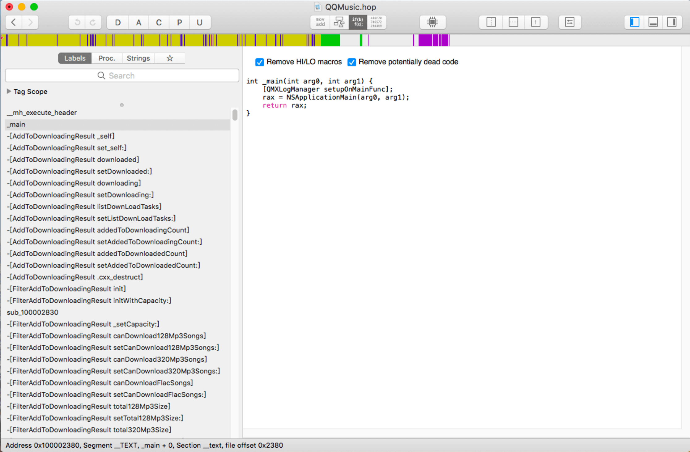
既然要动态调试代码，我们就找一些代码试试水，比如试着获取歌曲相关信息的下载地址。我们在函数列表区域搜索框中输入关键字 download，滚动结果，看看能搜到什么有用的信息
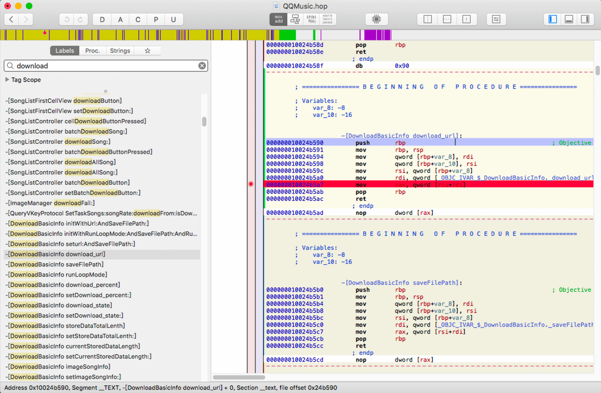
看到DownloadBasicInfo download_url这个比较可疑，于是下断电，菜单点击Debug –> Select Debugger
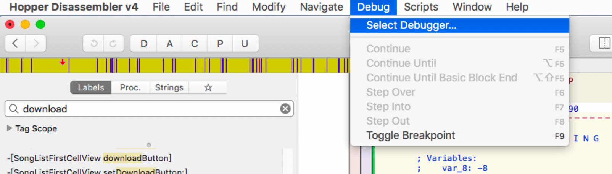
弹出对话框中点击Local Debugger，弹出调试对话框
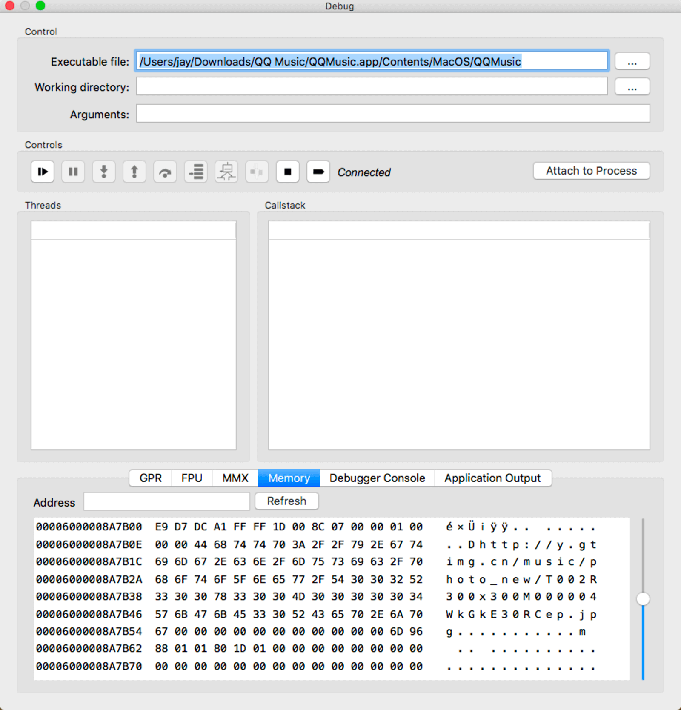
运行QQ音乐.app，点击调试对话框中的Attach to Process，找到QQ音乐的进程，双击选中
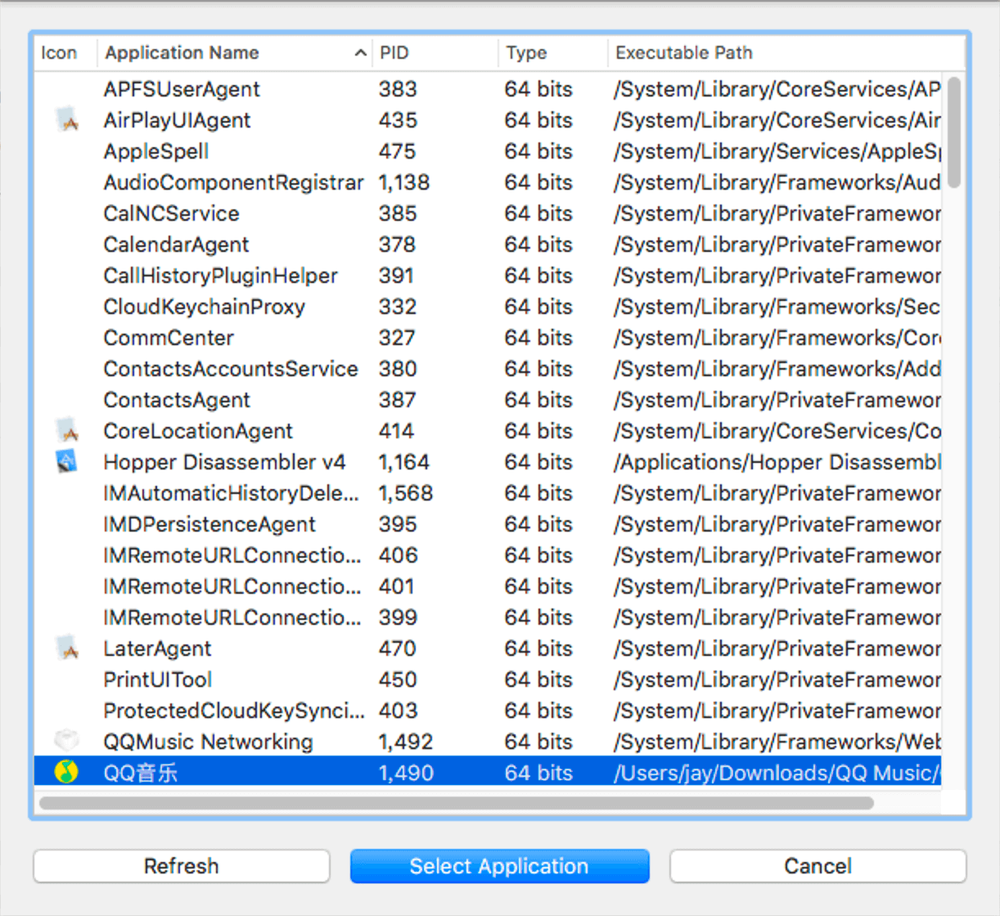
这时，程序会断点在一个特定的地址，continue execution按钮直接跳过即可，然后就可以愉快的调试啦
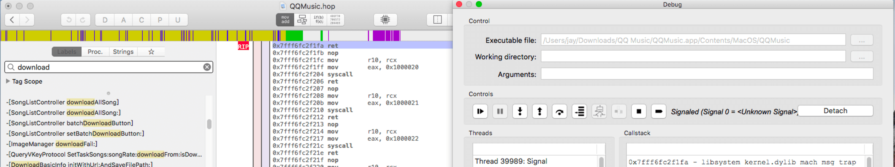
回到QQ音乐，随便点一个歌单，点击播放
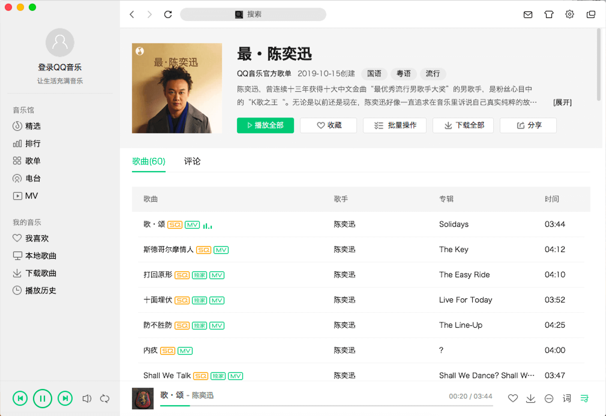
这时断点生效，程序停在0x000000010024b5a7这一地址
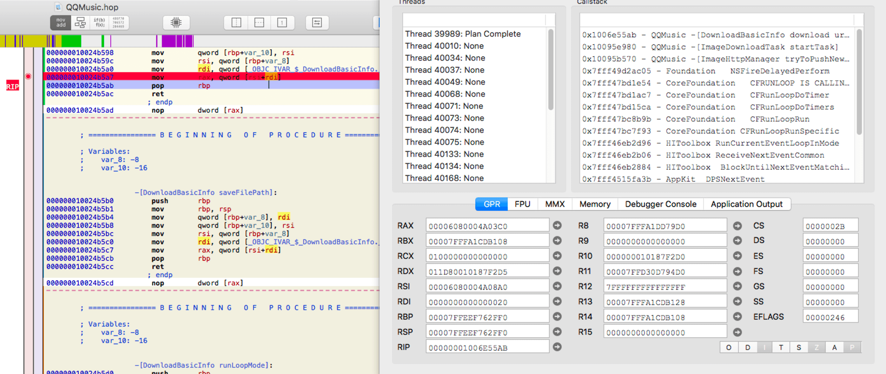
查看RAX寄存器地址（点击寄存器左边小箭头），查看内存数据
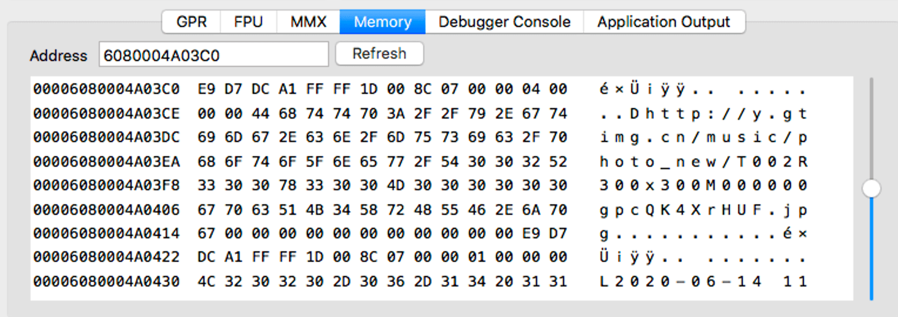
可以看到，url的值为http://y.gtimg.cn/music/photo_new/T002R300x300M000000gpcQK4XrHUF.jpg，浏览器输入查看结果
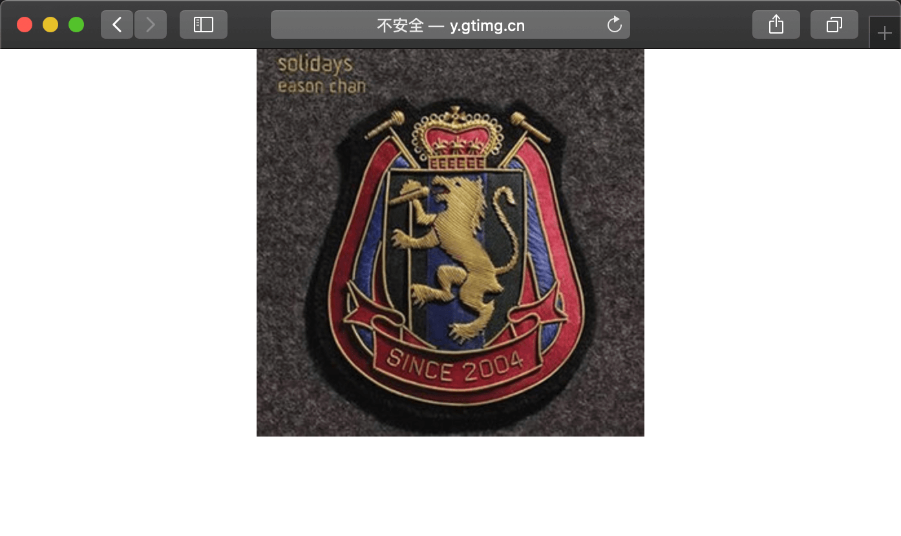
正好是歌曲的封面图片数据。
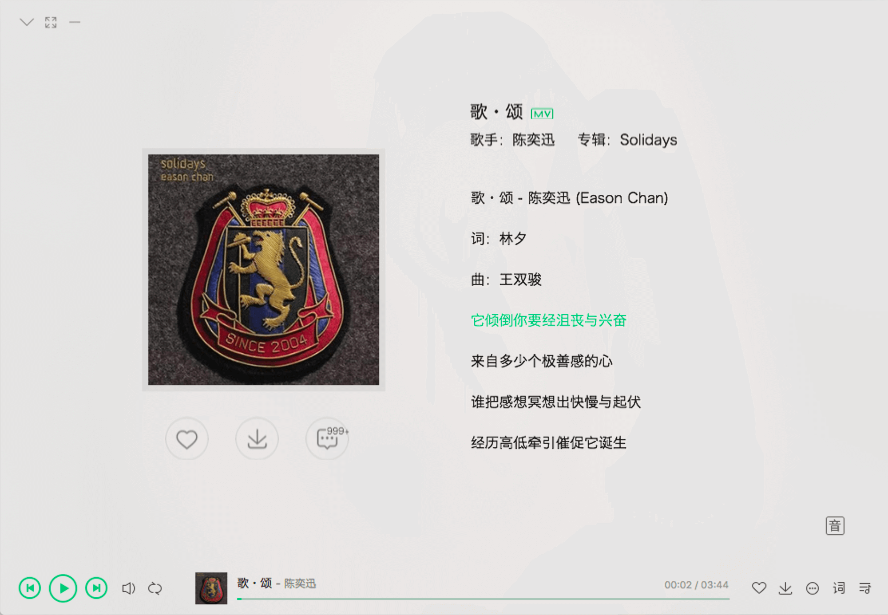
这里需要注意的是，断点查看RAX寄存器地址的内存值时，前16字节我们是直接跳过的，第17个字节是字符串的长度，第18个字节开始才是URL的值。这是由NSString的数据结构决定的，感兴趣的可以深入了解一下。
换一首歌再试试看，点击 continue execution，QQ音乐点击下一首歌曲，再次断点查看内存值为 http://y.gtimg.cn/music/photo_new/T002R300x300M000004WkGkE30RCep.jpg
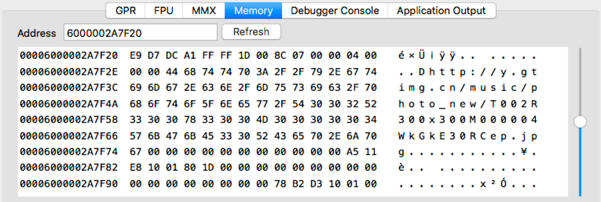
浏览器输入URL，再次验证得到的URL为歌曲封面图片。
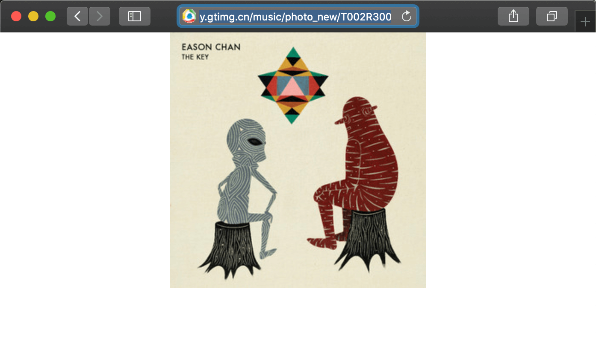
逆向就这么容易吗
实则不然，DownloadBasicInfo download_url这个函数其实是我试了若干次其他可疑函数才命中的，而且一开始我其实是想找歌曲的下载地址，但是后面发现找到下载URL地址后，浏览器输入后返回403，说明还有其他参数需要加入（猜测是header、token等鉴权参数，服务器安全机制的常规操作）。难度太大就选了这个软柿子捏了，方便初学者入门，
实际逆向过程也是如此，二进制的可执行文件是面向机器的，它并不是按照人的习惯的规则去整理代码，因此我们往往需要花大量的精力猜测、尝试，才能找到自己关心的那段关键代码。
但是，相较于C/C++、Java等可混淆的语言而言，使用消息机制的OC的逆向分析还是要简单的多，函数名的字符串基本都是源码保持一致，这样猜测代码逻辑起来会容易很多，在Java语言的逆向(Android APP)章节中分析混淆后的Java代码，基本上就得靠动态调试来猜逻辑了。
快捷键
IDA 常用快捷键
- 函数列表
Ctrl+F：输入关键字查找 - IDA View中，
F5：反编译汇编代码为伪代码 - IDA View中，
Tab：转跳到当前行对应的伪代码 - IDA View中，
G：转跳地址 - IDA View中，
;：添加注释 - 伪代码View中，
/：添加注释 - 光标停在函数名中，
Enter：进入函数实现的代码，ESC返回上一层转跳位置 - 光标停在函数名中，
X：查看函数引用 - 光标停在变量名，
N：变量重命名 - 光标停在变量名，
Y：修改变量申明类型 - Structures View中，
I：创建结构体 - 光标在结构体ends这一行，
D：添加成员 - 光标在结构体成员这一行，
D：改变成员字段大小(db, dw, dd, dq分别代表1-8个字节) - 光标在结构体成员这一行，
N：成员变量重命名